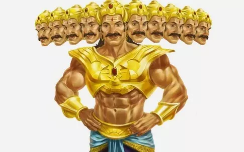
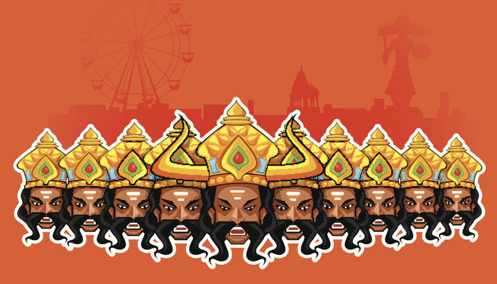
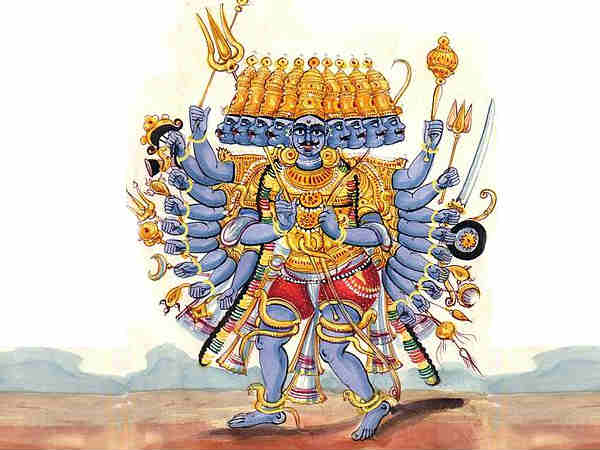

 |
 |
Sumali was the leader of a pack of rakshasas who prowled the jungles of the south.One day he happened to meet Kubera,the leader of yakshas who had built a city of gold called 'Lanka' on the island of trikuta in the middle of the southern sea.
Sumali learned that Kubera's mother was a Yaksha but his father was a rishi called Vishrava.Knowledge of tapasya,yagna and vedas obtained from his father enabled kubera to build the golden city.Sumali then desired to have a child as powerful and learned as kubera.
So he ordered his daughter,Kaikesi to go to vishrava and have a child by him.That is how Dashaanana was born.He was named so because after he was born he was placed on a table adjacent to mirrors,so whoever looked at him thought he had ten heads and thus the name.
Vishrava taught Dashaanana all about tapasya,yagna and the vedas.Dashaanana expanded his mind so much that he needed ten heads to store all the knowledge and twenty arms to accomodate his strength.

Sumali always compared dashaanana to kubera,so dashaanana wanted to be more powerful than him. So he invoked brahma and obtained from him a pot of nectar that he hid in his navel.As long as he had this pot with him,he could not be killed.
Dashaanana then invoked lord shiva.He cut off all his ten heads and made a lute out of it called the 'Rudra-Veena'.Pleased by his devotion lord shiva declared him as his most ardent devotee and gave him weapons which no one could defeat in war.
With these weapons,dashaanana overthrew kubera and declared himself the lord of lanka.Kubera ran to north and sought refugee in shiva's shadow.There he built another city,Alanka the opposite of lanka more popularly known as alka-puri.
This dashaanana will be named Ravana by lord shiva in another encounter with him.